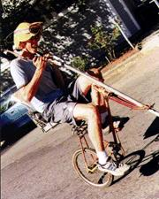
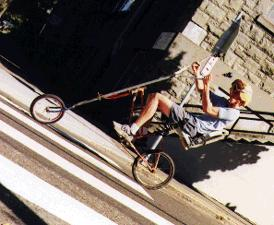
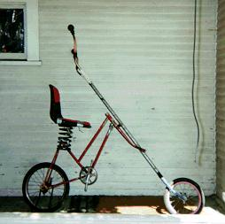
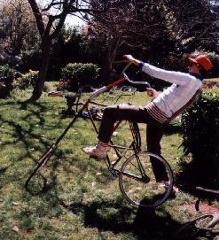
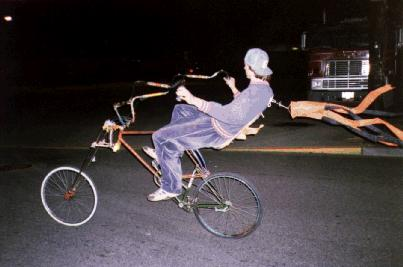
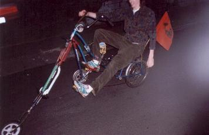
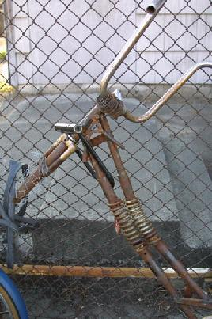

{kind=link}
{kind=link}

 
|
Vlad the Impaler, the first intentionally springy bike of the fleet. Somewhat hard to mount, because one had to climb in the middle and wedge one's face in the handlebars - which ended in clobberingly beautiful knobs - before gaining enough momentum to assume the laid-back riding position and get some space. Nowadays, Vlad spends his time rusting in the chronic pile. |
 |
Bendy, designed and constructed by Big B., is yet another ride that nobody but he can handle. Because Big B. can ride anything, he rides everything, and because he rides everything, he has put his body through the wringer of wheeled torture devices. Bike riding becomes too painful for most people when they get scabs where Big B. gets them, and most people take a break for a while. Not Big B. He does have a modicum of sense, however, and has turned his attentions towards designing cushier bikes such as Bendy. The only interface between flesh and metal not mediated by a spring is the pedals.
|
Since Bendy is more complex than most rides, it has undergone more continuous research and modification than the rest. At first, Bendy's stem was half spring. This required Big B. to use foresight in turning, inputting maneuvers a moment before they are to be executed, and oversteering and correcting often. When observing his riding style, one was quickly impressed by the way that his body remained steady and upright while the bike swayed from side to side. Bendy was soon rebuilt with a mumble-linkage suspension design that Big B. implemented after staring at an old motorcycle for a long time, and extra large handlebars for that springy feeling that only overextended thin metal tubes can give. Nowadays, Bendy can also be found rusting in the chronic pile. |
 |
|  | |
| For Big B's latest, he used a pogo stick for the fork. That and his suspended drink holder ensures that he never spills a drop. The Pogocyclething was stolen before it could be thrown in the chronic pile. |  |
|
 |
And then, Thud made Sproing, the most advanced suspended bicycle ever created. It's a simple design, two springs in the middle of the frame. Unless the perfect balancing point is found, riding Sproing feels like holding the bike together with your body. Because Sproing has no hinges, only springs, it absorbs punishment, bouncing around after a crash long after its thrown rider has stopped rolling. For this reason, Sproing will never, never rust away the years in the chronic pile. |
| Copyright 2003 Megulon Five <megulon5@dclxvi.org>. |
|
This work is licensed under a Creative Commons License. | Last modified 8 May 2003. |